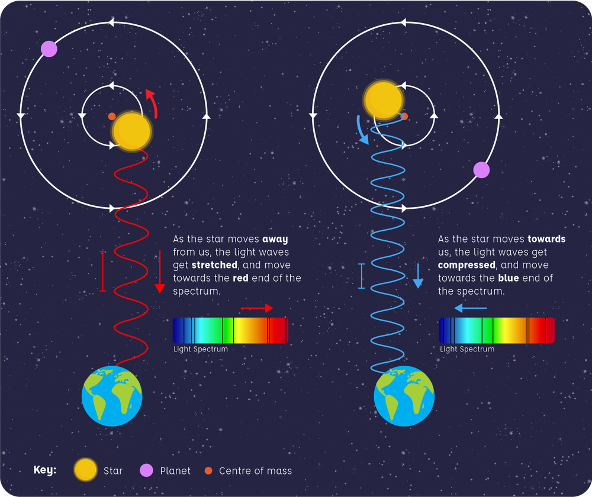

The Radial Velocity Method is a way of deducing the existence and parts of a planet by keeping track of its host's spectral lines. This is because the host star will still be induced with a small gravitational influence from the exoplanet, causing the host star to seem redder or bluer hues at times.
